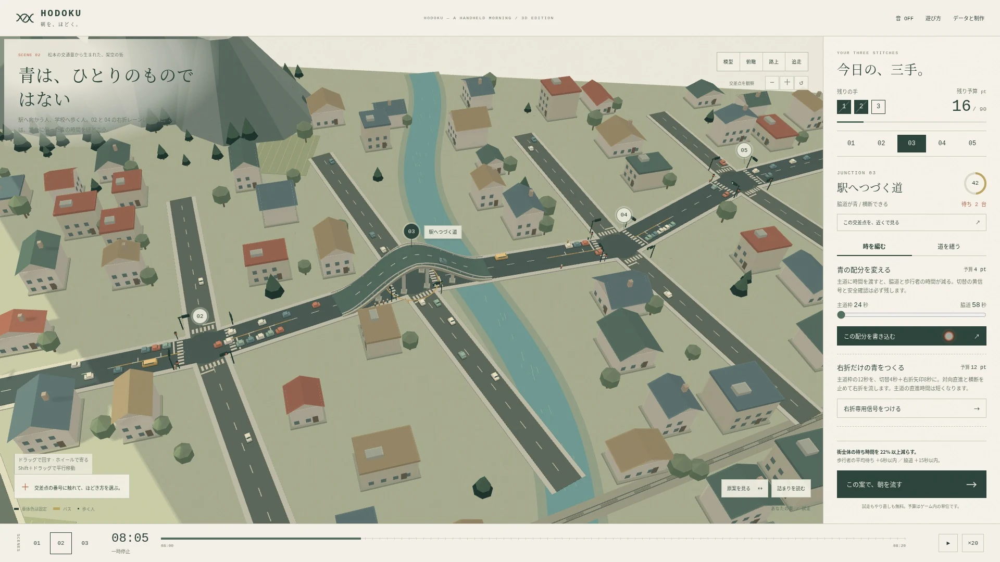
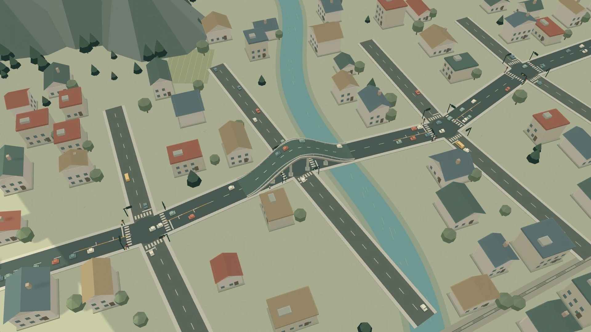
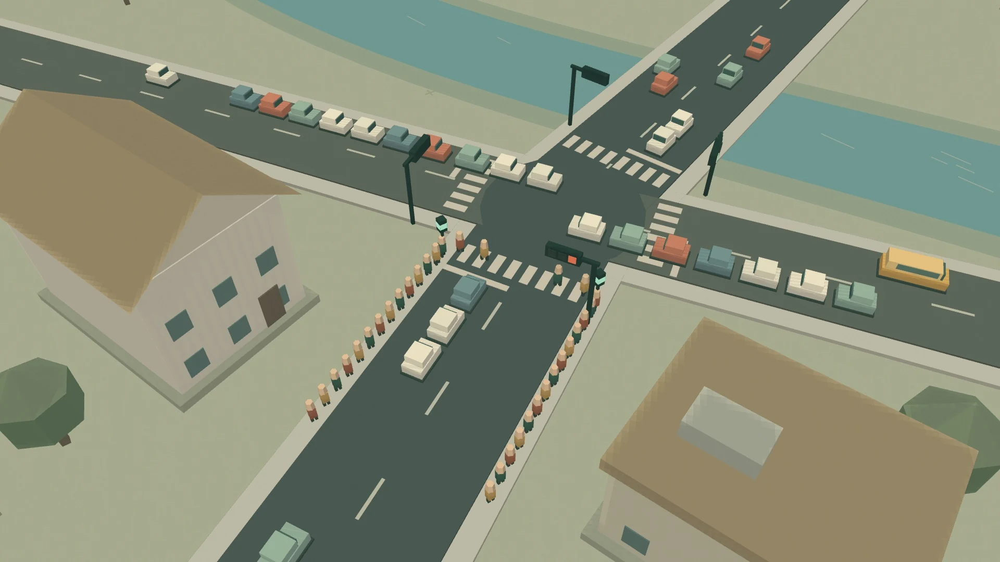

01TIMING / 3–14 PT
青の時間を、編む。
長さを変える。開始をずらす。連動させる。
列が着くころに、次の信号が青になる。
01 / THE PREMISE
ここにあるのは、もう完成した街。
足りないのは、ほんの少しの工夫です。
青信号を長くしたら、別の道が詰まる。
高架をかけても、その先が動かない。
正解は、大きな工事とは限りません。
02 / THREE WAYS TO UNTANGLE
信号の拍を合わせるか。
曲がる車の居場所をつくるか。
限られた予算を、どこへ使う？
03 / THE SAME MORNING, REWRITTEN
同じ車。同じ経路。同じ発車時刻。
変わるのは、あなたの設計だけ。
スライダーを動かして、原案と変更案を比較。

第2景のプレイ結果の一例。
2手・74ptで、朝の結び目をほどいた。
04 / NOT JUST CARS
横断歩道で待つ人。
脇道から出たい車。
バスで、どこかへ向かう人。
一つの道を流すために、
誰かを待たせすぎていないだろうか。
ほどくのは、渋滞。
取り戻すのは、みんなの時間。

THREE CHAPTERS
青なのに、動かない。その理由を見つける朝。
車と歩行者へ、限られた時間を配り直す。
道は整った。残るのは、信号のリズム。
A NOTE ON THIS TOWN
交通量の種は、国土交通省・長野県が公開する2021年度の道路交通調査。
松本の宮田・鎌田・渚の観測値から、3つのステージが生まれました。
地形・建物・道路配置・歩行者数・工事費と効果はゲーム用の創作です。
実在する街の再現や、実際の交通政策の効果予測ではありません。
PCではドラッグで回転、ホイールで拡大・縮小。タッチでは1本指で回転、2本指で拡大・移動。音はゲーム内でONにできます。WebGL対応ブラウザ向け。非対応環境では2D表示に切り替わります。スマートフォンでも操作できますが、快適な観察にはPCの画面を推奨します。